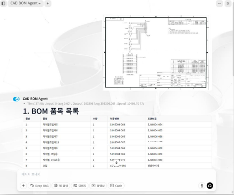

OfficeGPT BOM Agent는 단순한 문자 인식(OCR)을 수행하는 것을 넘어, 도면의 전체적인 맥락과 복잡한 표 구조를 이해하는 Vision LLM(Visual Language Model) 기반으로 합니다. 비정형화된 도면 양식 내에서도 BOM 영역을 스스로 탐색하며, 각 텍스트가 품번인지, 품명인지, 혹은 제조사인지에 대한 속성 정보를 지능적으로 분류합니다.
기존 OCR이 개별 문자를 단순 판독하는 수준이라면, VLM은 도면 전체의 레이아웃과 복잡한 표 구조 간의 상관관계를 파악합니다. 도면의 ‘맥락’을 이해하여 선과 글자가 겹친 상황에서도 보다 정확한 의미를 도출합니다.
규격화되지 않은 다양한 도면 양식에서도 BOM 영역을 스스로 탐지하고, 추출된 텍스트를 품번, 품명, 제조사 등의 속성 정보로 지능적으로 분류하여 정보를 구조화합니다.

| 번호 | 품명 | 수량 | 부품번호 | 제조사 |
|---|---|---|---|---|
| 1 | 케이블브라켓 | 1 | SJ-N5001-064 | SJ-N5001-064 |
| 2 | 케이블클램프 | 2 | SJ-N5001-065 | SJ-N5001-065 |
| 3 | 케이블브라켓3 | 1 | SJ-N5001-066 | SJ-N5001-066 |
| 4 | 케이블브라켓4 | 1 | SJ-N5001-067 | SJ-N5001-067 |
| 5 | 케이블부품 | 1 | SJ-N5001-068 | SJ-N5001-068 |
| 6 | 케이블, 브라켓 | 1 | SJ-N5001-070 | SJ-N5001-070 |